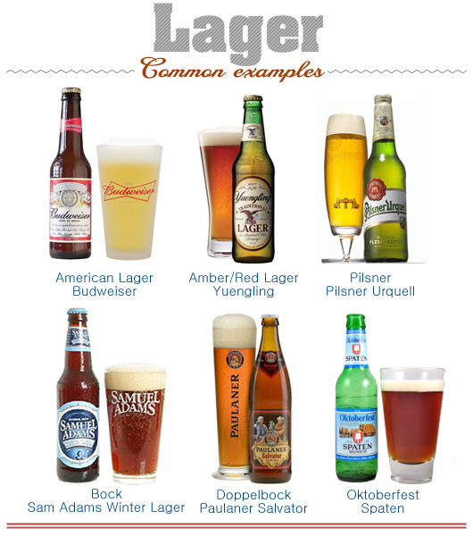
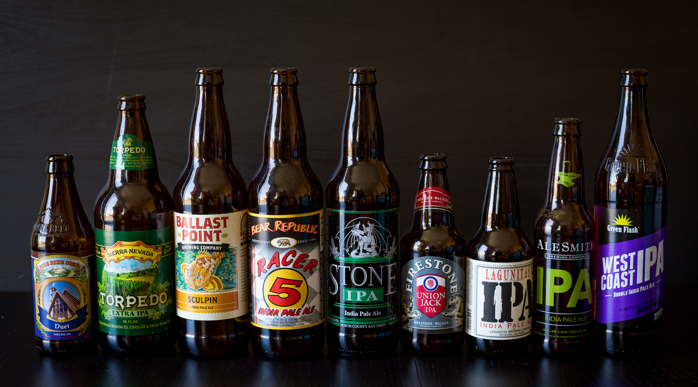
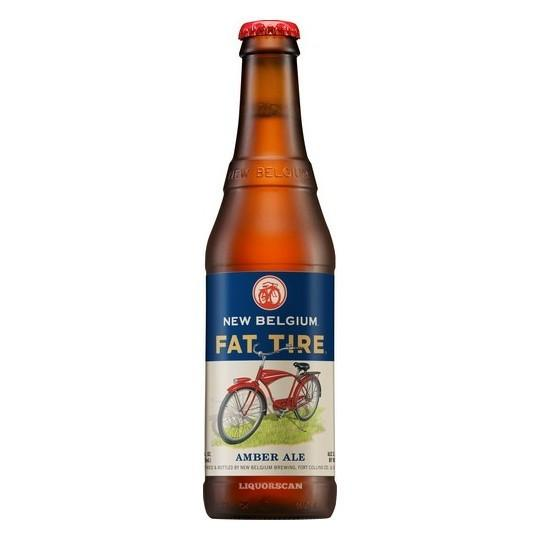
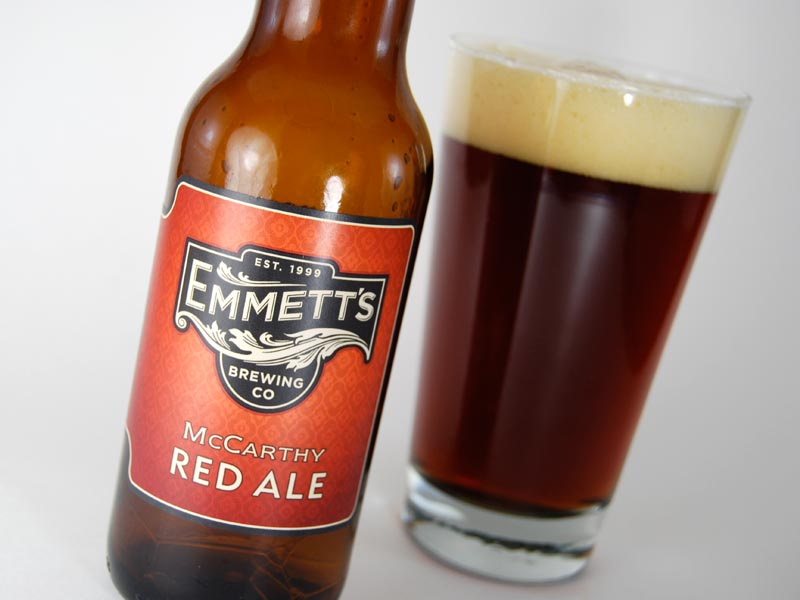
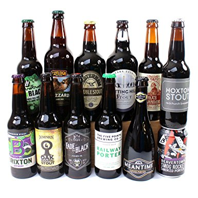
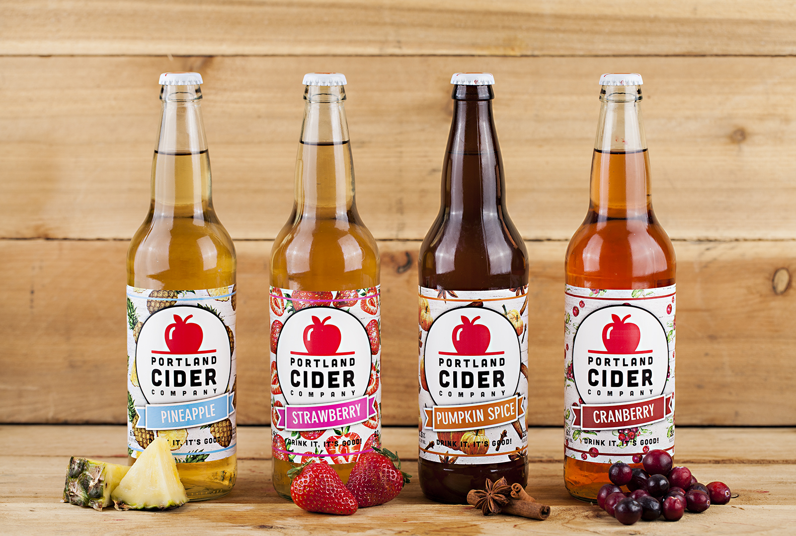

Answer the following questions

You should try
LAGER
Lager beer uses a process of cool fermentation, followed by maturation in cold storage. The German word "Lager" means storeroom or warehouse. The yeast generally used with lager brewing is Saccharomyces pastorianus. It is a close relative of the Saccharomyces cerevisiae yeast used for warm fermented ales.
POPULAR BRANDS
- Eliot Ness
- The Crisp
- Narragansett
You should try
IPA
India pale ale (IPA) is a hoppy beer style within the broader category of pale ale. It has also been referred to as pale ale as prepared for India, India ale, pale India ale, or pale export India ale.India pale ale (IPA) is a hoppy beer style within the broader category of pale ale. It has also been referred to as pale ale as prepared for India, India ale, pale India ale, or pale export India ale.
POPULAR BRANDS
- Russian River Blind Pig
- Ballast Point Sculpin
- Firestone Walker Union Jack IPA
You should try
AMBER ALE
Amber ale is a term used in Australia, France and North America for pale ales brewed with a proportion of amber malt and sometimes crystal malt to produce an amber color generally ranging from light copper to light brown.
POPULAR BRANDS
- Rogue American Amber Ale
- Full Sail
- Hopback
You should try
RED ALE
Red Ale.use of American hops in this ale lends to the perception of medium hop bitterness, flavor and aroma. Coupled with a solid malt profile, this should be a beer with balance between hop bitterness and malt sweetness.
POPULAR BRANDS
- North Coast Ruedrich's
- Deschutes Cinder Cone
- Kona Lavaman
You should try
STOUT
Stout is a dark beer made using roasted malt or roasted barley, hops, water and yeast. Stouts were traditionally the generic term for the strongest or stoutest porters, typically 7% or 8%, produced by a brewery.I
POPULAR BRANDS
- Yeti Imperial
- Black Chocolate
- Abraxas
You should try
CIDER
Cider is an alcoholic beverage made from the fermented juice of apples. The juice of any variety of apple can be used to make cider, but cider apples are best
POPULAR BRANDS
- Strongbow Hard Apple Cider
- Stella Artois
- Woodchuck Gumption Hard Cider